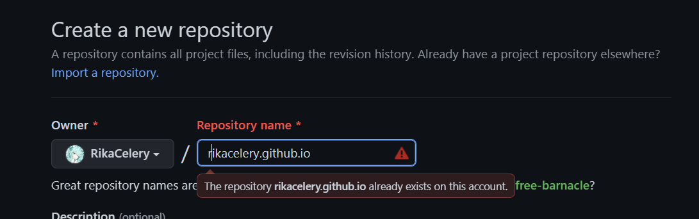

搭个锤子,先⚪(bushi)
github准备工作
先创建一个空的仓库,注意格式用户名.github.io

hexo
安装node
使用hexo需要先安装nodejs,选最新版安装就行
安装hexo
1 | npm install hexo-cli -g |
新建博客
1 | hexo init blog |
新建文章
1 | cd blog |
配置主题
主题可以在_config.yaml找到https://hexo.io/themes/
找到喜欢的主题之后clone到themes目录下即可
然后把_config.yaml中
1 | theme: '' |
改为你的主题目录名字
本地预览
1 | hexo server #(缩写为s) |
生成
1 | hexo generate #(缩写为g) |
上传GitHub
安装插件
1 | npm install hexo-deployer-git --save |
然后
1 | hexo d |
需要登录的话网页授权一下就行
关于数学公式
网上查了查
主要是先替换默认渲染器为kramed
1 | npm uninstall hexo-renderer-marked |
然后配置主题
1 | # 其他主题貌似不需要这个 |
但是我换了之后好像没什么用
然后找到了另一个
1 | npm install hexo-math --save |
这个是可以用的,但是每次要写一大串东西比较麻烦
所以我又安装了
1 | npm install hexo-filter-mathjax --save |
然后在文章开始处配置
1 | mathjax: true |
1 | c=\pm\frac{n+2}{n-1} |